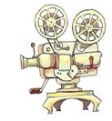

The Abe Film Fest is an opportunity for students to showcase their movie-making talents by granting them a platform to create a 6 minute movie.
The festival begins with daily screenings of the film entries and ends with a Gala Event, held in the gym, where prizes are awarded to the winning films and to all participating directors.
Interested students submit their films in various genres such as animation, Claymation, documentaries, action, comedy and drama related movies.
Over the past years, our producers have gained experience and received high recognition for their talents at other film festivals as well as our own.
We are the only high school that has managed to keep their Film Fest alive and well for so many years; This is because of students like you: those of you who are willing to continue supporting our cause, take risks and keep the ideas flowing! Go Abe! Go Orange!